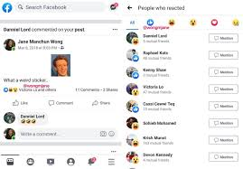

- Facebook
-
Facebook is an online social media and social networking service owned
and operated by American company Twitter, Inc., on which users send and
respond publicly or privately 280-character-long messages, images and
videos known as "tweets".[8] Registered users can tweet, like, 'retweet'
tweets and direct message (DM), while unregistered users only have the
ability to view public tweets. Users interact with Twitter through
browser or mobile frontend software, or programmatically via its APIs.
Twitter was created by Jack Dorsey, Noah Glass, Biz Stone, and Evan
Williams in March 2006 and launched in July of that year. Twitter, Inc.
is based in San Francisco, California and has more than 25 offices
around the world.[9] By 2012, more than 100 million users tweeted 340
million tweets a day,[10] and the service handled an average of 1.6
billion search queries per day.[11][12][13] In 2013, it was one of the
ten most-visited websites and has been described as "the SMS of the
Internet".[14] By the start of 2019, Twitter had more than 330 million
monthly active users.[15] In practice, the vast majority of tweets are
tweeted by a minority of users.[16][17] In 2020, it was estimated that
approximately 48 million accounts (15% of all accounts) were fake.[18]
On October 27, 2022, business magnate Elon Musk acquired Twitter, Inc.
for US$44 billion, gaining control of the platform.[19][20][21][22] On
December 20, 2022, Musk announced he would step down as CEO once a
replacement had been found.[23]

Back